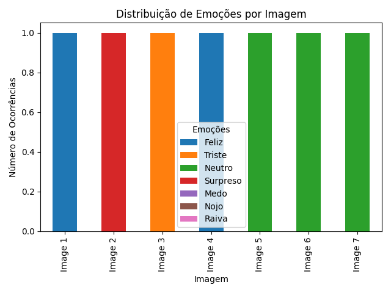
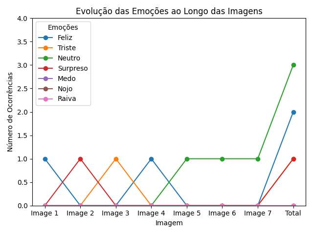
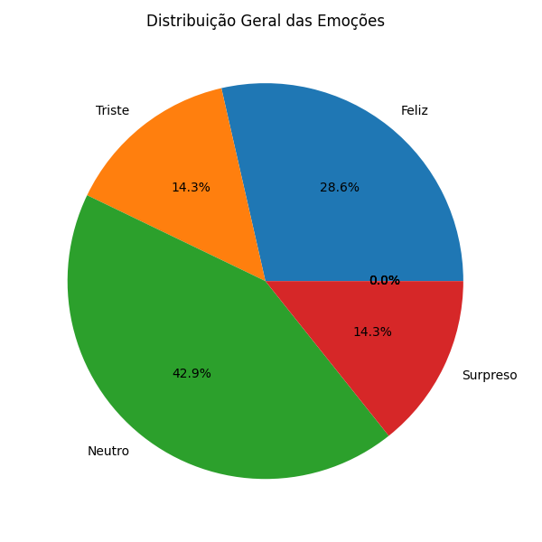

Relatório de Emoções dos Alunos
Data: 18/06/2024 16:16
Nome do Aluno: DEVE SER VARIAVEL
Professor: Prof. Claudionor
Instituição de Ensino: Universidade Adventista de São Paulo
Disciplina: Processamento de Imagens Visão Computacional
Resumo Geral
Duração da Aula: 60 minutos
Emoção Predominante: DEVE SER VARIAVEL DE ACORDO COM A QUANTIADE DE IMAGENS QUE SERÃO PASSADA DO ALUNO
Distribuição de Emoções ao Longo da Aula
| Imagens analisadas |
Feliz |
Triste |
Raiva |
Nojo |
Medo |
Surpreso |
Neutro |
| Image 1 |
0 |
0 |
1 |
0 |
0 |
0 |
0 |
| Image 2 |
1 |
0 |
0 |
0 |
0 |
0 |
0 |
| Image 3 |
0 |
0 |
0 |
0 |
1 |
0 |
0 |
Gráficos



Recomendações
Para Manter o Aluno Feliz
- Manter atividades interativas, como discussões em grupo e quizzes.
- Diversificar métodos de ensino, incluindo vídeos, demonstrações práticas e atividades participativas.
- Oferecer elogios e reconhecimento para manter o moral dos alunos alto.
- Promover um ambiente de aprendizado positivo e encorajador.
- Incorporar pausas curtas para atividades recreativas ou exercícios de alongamento.
Para Reduzir Tristeza
- Simplificar explicações difíceis e usar exemplos práticos e analogias.
- Oferecer apoio adicional, como sessões de perguntas e respostas ou tutoriais complementares.
- Encourajar a comunicação aberta para que os alunos possam expressar dificuldades.
- Proporcionar feedback positivo e construtivo para melhorar a autoestima dos alunos.
- Implementar técnicas de ensino diferenciadas para atender diferentes estilos de aprendizagem.
Para Envolver o Aluno Neutro
- Introduzir mais atividades colaborativas que incentivem a participação ativa.
- Fornecer feedback constante e individualizado para manter os alunos envolvidos.
- Usar tecnologia educativa, como aplicativos interativos, para aumentar o engajamento.
- Desafiar os alunos com problemas práticos e situações do mundo real.
- Criar metas claras e alcançáveis para motivar os alunos a participar ativamente.
Conclusão
Esse relatório visa proporcionar ao professor uma visão clara e objetiva sobre as emoções dos alunos durante a aula, permitindo identificar momentos chave e ajustar estratégias pedagógicas para melhorar a experiência de aprendizado.